VoxelGeneratorGraph详细使用
概念
VoxelGeneratorGraph允许通过将操作节点连接在一起来表示 3D 密度。它采用 3D 坐标（X、Y、Z），并从中计算每个体素的值。例如，它可以做一个简单的2D或3D噪声，可以使用其他噪声，曲线甚至图像进行缩放，变形，掩盖。 这种方法的一大灵感再次来自有符号距离场的雕刻（每个体素存储到最近表面的距离），这就是为什么主输出节点可能是. SdfOutput 一堆节点也应该在SDF上工作。但是，只要结果对于游戏来说看起来是正确的，就不必严格尊重完美距离，因此大多数时候使用近似值更容易。 注意 体素图介于编程 3D 着色器和程序设计之间。它的速度与C++发电机相似，但只有基本指令，因此涉及一些数学。将来添加更多高级节点时，这可能会有所缓解。
示例
平面
具有可见输出的最简单图形是平面。平面的 SDF 是到海平面的距离 （0），即 sdf = y 。换句话说，表面将显示在体素值与零交叉的位置。
右键单击图形的背景，选择节点 InputY 和 SdfOutput ，然后通过将它们的端口拖在一起将它们连接在一起。
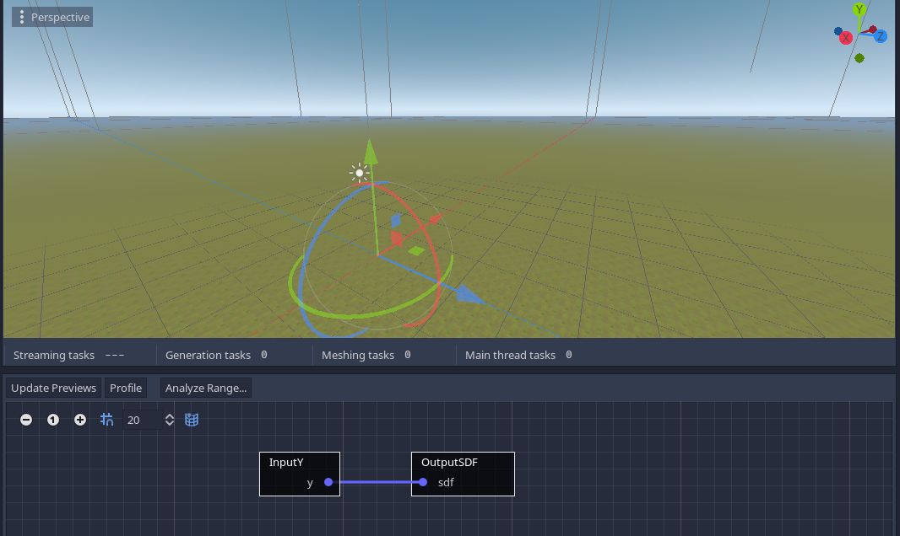
可以通过减去一个常数 （ sdf = y
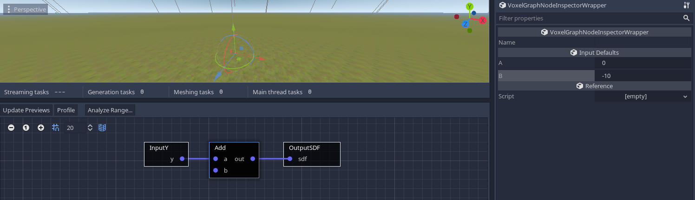 默认情况下， Add 节点不执行任何操作，因为它的 b 端口未连接到任何端口。可以为此类端口提供默认值。您可以通过单击节点并在检查器中进行更改来设置它。 （注意：我使用了 Add 负值 b ，但您也可以使用 Subtract 节点来获得相同的结果）。
噪音 ¶
平面很简单，但有点无聊，因此生成地形的一种典型方法是添加良好的旧分形噪声。您可以在 2D（高度贴图）或 3D（体积）中执行此操作。2D方法更简单，因为我们只需要采用以前的设置，并在结果中添加2D噪声。此外，由于噪声是在 \[-1 到 1\] 范围内产生的，我们还需要一个乘数来使其更大 （ sdf = y
有几种类型的噪声可用，每种都有自己的参数。在撰写本文时， FastNoise2D 噪音是最佳选择。 Noise2D 也可以工作，但它更慢，更有限（它使用戈多 OpenSimplexNoise 的类）。
注意
创建此节点后，必须在其参数中创建新 FastNoiseLite 资源。如果未设置该资源，则会发生错误，并且不会生成体素。
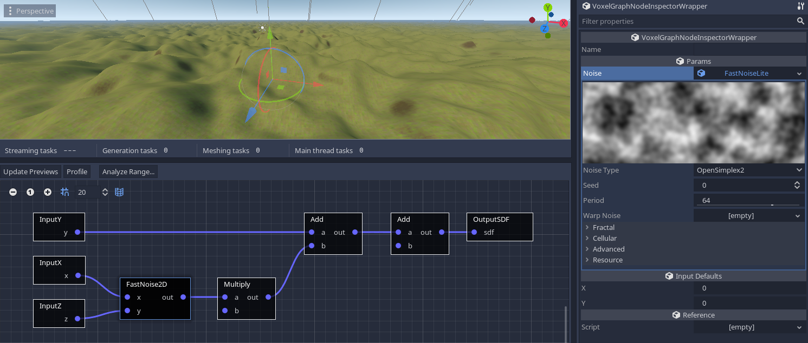
3D噪声的计算成本更高，但很有趣，因为它实际上会产生悬垂甚至小洞穴。在以前的设置中，可以用 3D 噪声替换 2D 噪声：
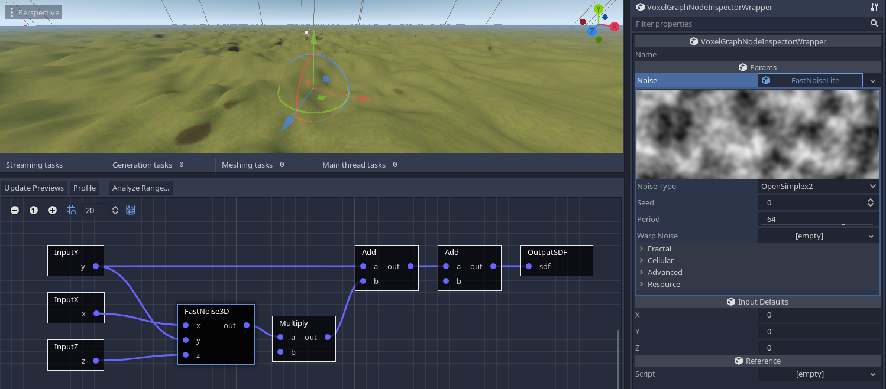
您可能会注意到，尽管它是 3D 的，但它似乎仍然会产生高度图。这是因为在图表 Y 中添加的噪声值在朝向天空时会逐渐抵消到越来越高的值，这使得表面迅速消失。因此，如果我们 Y 乘以较小的值，它将增加得更慢，从而使 3D 噪声扩展得更多 （ sdf = y * height_multiplier
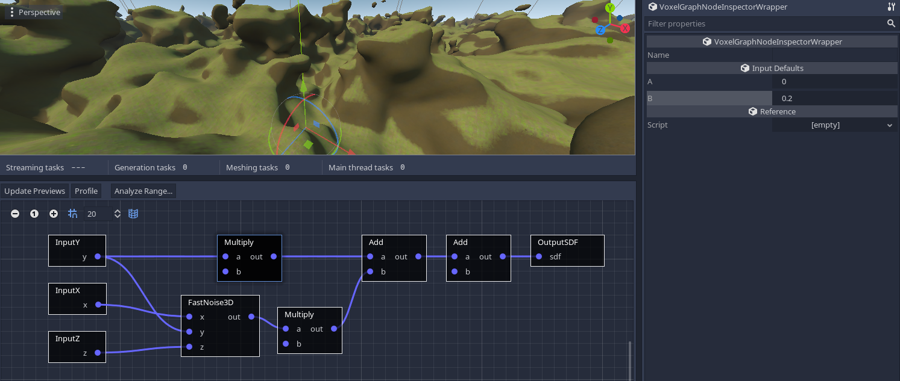 注意 某些节点具有默认连接。例如，对于 3D 噪声，如果不连接输入，默认情况下它们将自动采用 （X，Y，Z） 体素位置。如果需要输入中的特定常量，可以通过在检查器中关闭 autoconnect_default_inputs 来选择退出此行为。
星球 ¶
我们实际上并没有被迫像飞机一样不断创造世界。我们可以更疯狂，做行星。开始一个行星的一个好方法是用 SdfSphere 节点做一个球体： 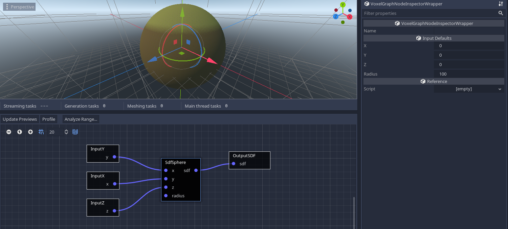 我们在这里不能真正使用 2D 噪声，因此我们也可以添加 3D 噪声： 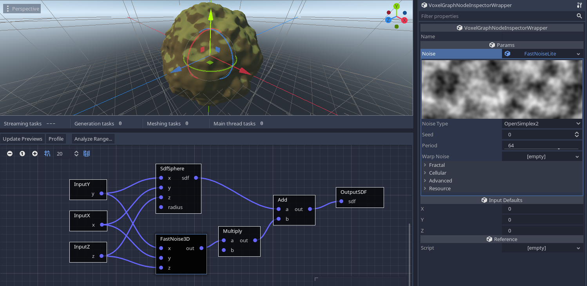 但是，您可能仍然想要类似高度图的结果。一种方法是输入 3D 噪声归一化坐标，而不是全局噪声归一化坐标。选择脊状分形也可以给出侵蚀的外观，尽管它需要否定噪声乘数节点以反转其距离场（如果我们将其保留为正值，它将看起来膨胀而不是侵蚀）。 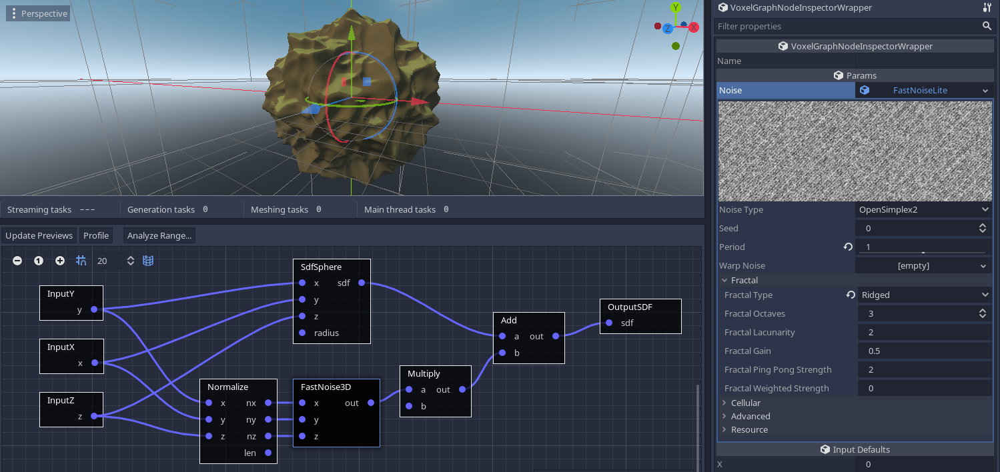 注意 如果将节点替换为 SdfSphere SdfTorus 节点，则可以获得甜甜圈形状的行星。 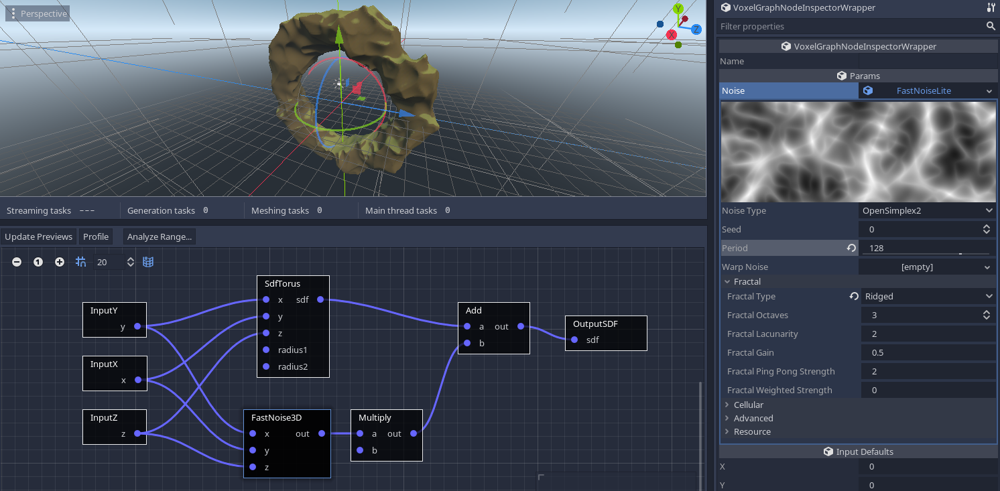 更多技术可以在过程生成部分找到。
块状体素的使用 ¶ 可以通过使用 OutputType 节点而不是 OutputSDF 来使用此生成器。 VoxelMesherBlocky 但是，期望体素是 ID， VoxelMesherBlocky 而不是 SDF 值。 最简单的示例是选取任何现有的 SDF 生成器，并替换为 OutputSDF Select 连接到 OutputType .这个想法是在 SDF 值高于或低于阈值时，在两种不同体素类型（如空气或石头）的 ID 之间进行选择。 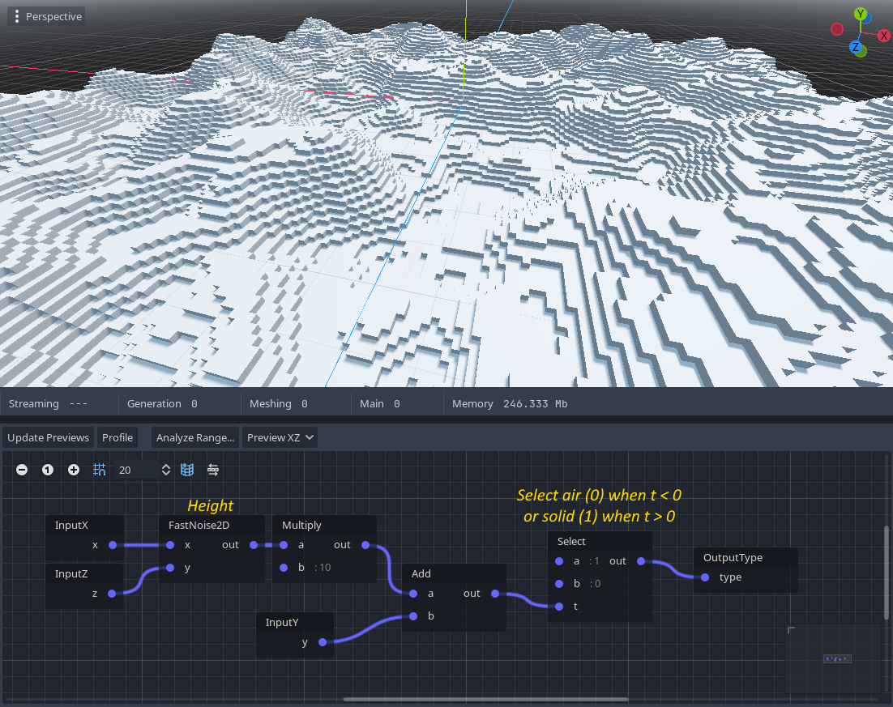 如果需要更多种类，可以将节点链接起来， Select 使用不同的阈值和源组合多个层。 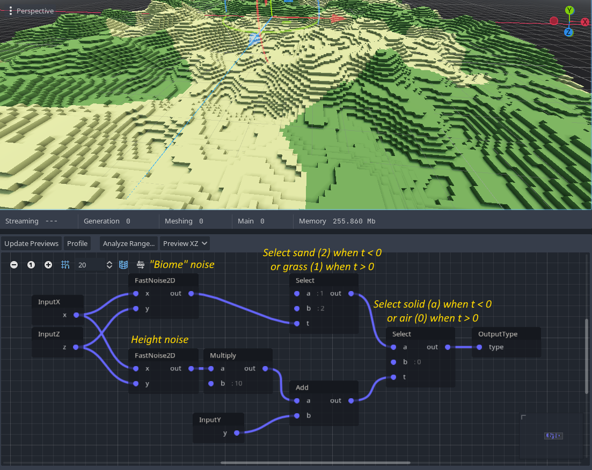 Select 在两个可能的值之间创建一个“切口”，并且可能需要进行某种过渡。虽然对于渐变的每个值没有很多不同的类型（通常使用着色器完成），这是不可能的 VoxelMesherBlocky ，但是很容易在阈值中添加一些噪声。这再现了类似的“抖动”过渡，正如在《我的世界》中沙子和泥土之间所看到的那样。 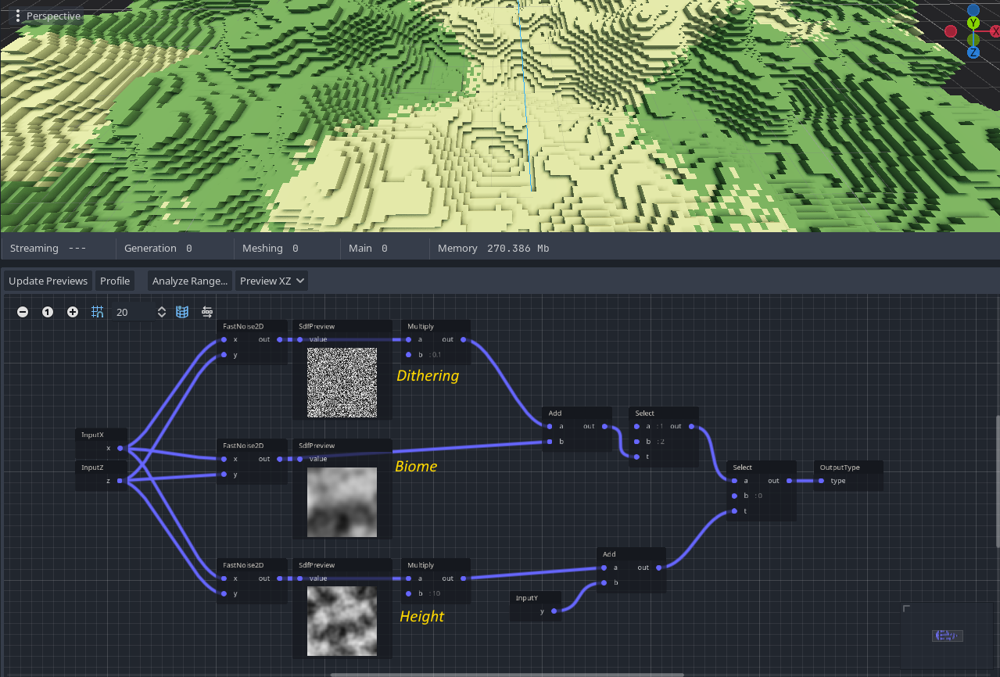 目前，图形生成器仅按体素工作。这使得它们非常适合生成基础地面和生物群落，但用它生成树木或村庄等结构是不切实际的。使用自定义生成器在整个块上使用第二次传递可能更容易实现。
继电器 ¶
存在一个特殊 Relay 节点来组织节点之间的长连接。他们自己什么都不做，他们只是重定向连接。中继也可能有多个目的地。 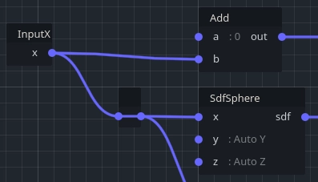
自定义生成器 ¶
请参阅脚本
用作 VoxelGeneratorGraph 画笔 ¶ 此功能目前仅在平滑体素中 VoxelLodTerrain 受支持。 VoxelTool 例如，提供了修改平滑地形 do_sphere 的简单功能，但也可以使用 VoxelGeneratorGraph 定义程序自定义画笔。相同的工作流程也适用于制作这样的图形，只是它可以接受节点 InputSDF ，因此可以修改带符号的距离字段，而不仅仅是生成。 使用图形重新创建的添加剂 do_sphere 示例： 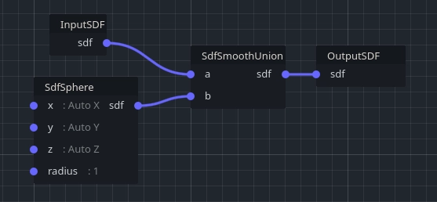 更复杂的扁平画笔，既减去球体中的物质，又增加半球中的物质以形成壁架（此处默认半径为 30 以获得更好的预览，但制作单位大小的画笔可能更容易重复使用）： 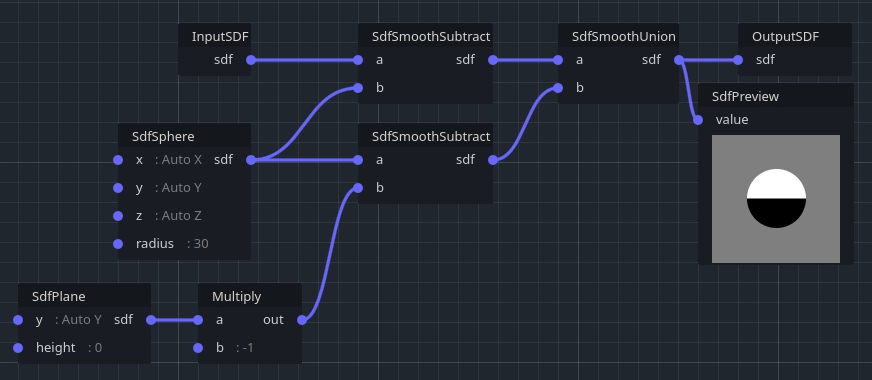 另一个需要考虑的细节是原始画笔有多大。通常体素生成器没有特定的界限，但在这里很重要，因为它将在本地使用。例如，如果您制作一个球形画笔，则可以使用 SdfSphere 半径 1 为 .然后，您的原始大小将是 (2,2,2) .然后，您可以在所需位置使用 do_graph 时变换该画笔（缩放、旋转...）。
可重复使用的图形与 VoxelGraphFunction ¶ VoxelGraphFunction 允许创建可以在其他图形中使用的图形。这是重用和共享图形的便捷方法。
创建函数 ¶
A VoxelGraphFunction 可以在检查器中创建并像 一样 VoxelGeneratorGraph 进行编辑，只是它缺少一些仅在后者上找到的功能。建议将函数保存为自己的 .tres 文件，因为这是允许在其他图形中拾取它们的原因。 注意 A VoxelGraphFunction 不能直接或间接地包含自身。这样做将导致戈多无法加载它。
公开输入和输出 ¶ 为了可以在其他图形中使用，函数应该有输入和输出。可以通过创建节点 InputX 、 InputY InputZ 、 InputSDF 或 CustomInput 来将输入添加到函数中。可以通过创建节点 OutputX 、、 OutputZ 、 OutputY 等 CustomOutput 来添加输出。 但是，需要额外的步骤才能向函数的外部用户公开这些输入和输出。要显示它们，请选择图形（如果已打开，则在后台单击），转到检查器，然后单击 Edit input/outputs 。 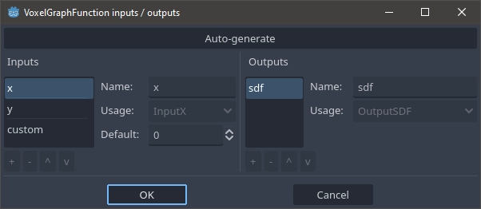 目前，不支持定义手动公开的输入和输出，但已计划。您可以改为单击 Auto-generate ，这将自动找到节点并将它们公开为输入和输出。这也定义了它们的公开顺序。 非自定义输入和输出（如 InputX or OutputX ）是特殊节点，由其类型标识。它们被引擎识别用于特定目的。您可以有多个具有相同类型的节点，但它们将始终引用函数的相同输入。 自定义输入和输出由其名称标识。如果添加 2 个 CustomInput 节点并为其指定相同的名称，它们将从相同的输入中获取数据。建议为自定义输入和输出节点命名。空名称仍算作一个名称（因此多个 CustomInput 没有名称的名称将引用相同的未命名输入）。 不允许多个特殊输入或相同类型的输入。不允许使用多个自定义输入或同名输出。
公开参数 ¶
目前参数无法公开，但已计划。
处理更改 ¶
当现有函数发生变化（例如，新的/删除的输入/输出）时，使用它的其他图形可能会中断。如果尝试打开它们，则可能会丢失某些节点和连接。 目前，您需要修复这些图形并保存它们。您还可以更改有问题的函数，使其输入、输出和参数符合您的期望。但是，如果保存损坏的图形，则可能会丢失某些连接或节点。
调试 ¶
编辑器工具（如性能分析、输出预览或范围分析）目前在 中 VoxelGraphFunction 不受支持。编辑 VoxelGeneratorGraph . 计划在将来编辑独立文件 VoxelGraphFunction 时提供这些工具。这将通过将功能移出 VoxelGeneratorGraph 以使其变得更加通用来完成。 检查函数“实例”（和子实例...）可能是可取的，但实现起来很棘手。它可以作为“内部开放”功能来完成，以检查“包含图”上下文中的数据。但是，由于函数在内部完全解包和优化，因此引擎必须将信息追溯到原始节点。跟踪在某种程度上已经存在，但仅将“顶级”图映射到完全扩展/优化的图，没有中间信息。将来可能会进一步研究这个问题。
体素生成器图节点 ¶ 可以在此处找到节点的完整列表。
修饰符 ¶
修饰符是影响体积有限区域的生成器。它们可以堆叠在基本生成的体素或其他修饰符之上，并影响最终结果。当您的世界大小有限，并且您希望从编辑器中以非破坏性方式设置特定的景观形状时，这是一个工作流程。 注意 此功能目前仅通过 实现 VoxelLodTerrain ，并且仅适用于雕刻平滑体素。它处于早期阶段，因此非常有限。 可以将修改器与节点一起添加为地形的子项。 VoxelModifierSphere 添加或减去球体，同时 VoxelModifierMesh 添加或减去网格。对于后者，必须首先使用 VoxelMeshSDF 资源将网格烘焙到 SDF 体积中。 由于修饰符是程序生成堆栈的一部分，因此破坏性编辑将始终覆盖它们。如果编辑了块，则修饰符不会影响它。然后假设此类编辑将在运行时来自玩家，并且修饰符不会更改。
缓存 ¶
生成器被设计为确定性的：如果同一区域生成两次，则结果必须相同。这意味着，最终，我们只需要存储编辑的体素（又名“破坏性”编辑），而未编辑的区域可以动态重新计算。即使您想要访问一个体素并且它恰好位于未编辑的位置，也会调用生成器以获取该体素。 但是，如果生成器太昂贵或预计不会以这种方式运行，则可能需要将输出存储在内存中，以便再次查询同一区域以获取缓存的数据。 默认情况下，将块缓存在内存中， VoxelTerrain 直到它们远离任何查看器。 VoxelLodTerrain 默认情况下不缓存块。目前还没有改变这种行为的选项。也可以告诉 a VoxelGenerator 将其输出保存到当前 VoxelStream ，如果有的话。但是，这些块将充当编辑过的块，因此它们的行为就像是破坏性的更改一样。